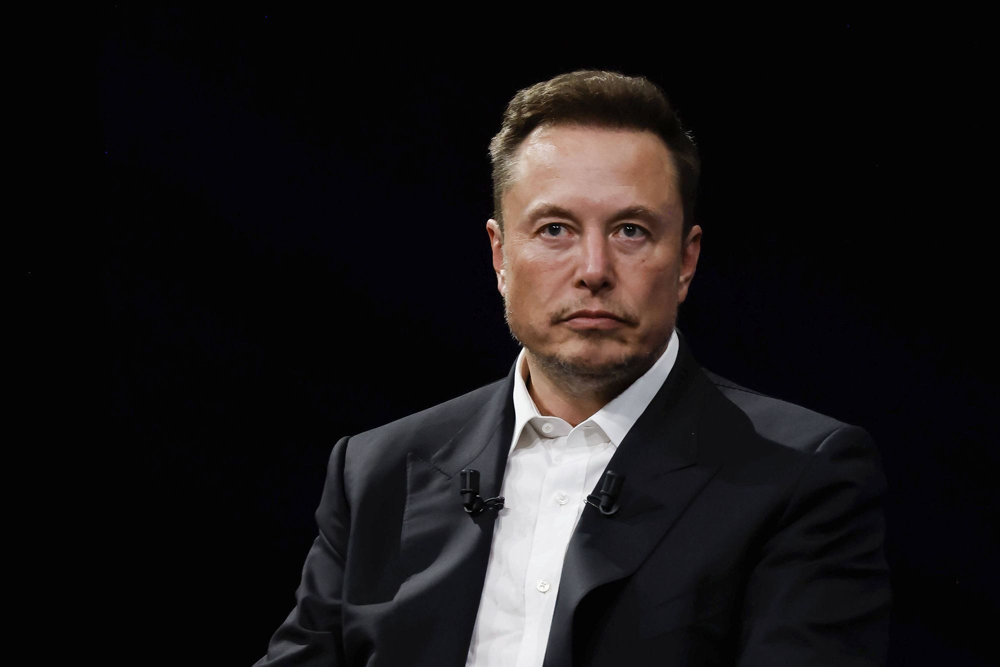
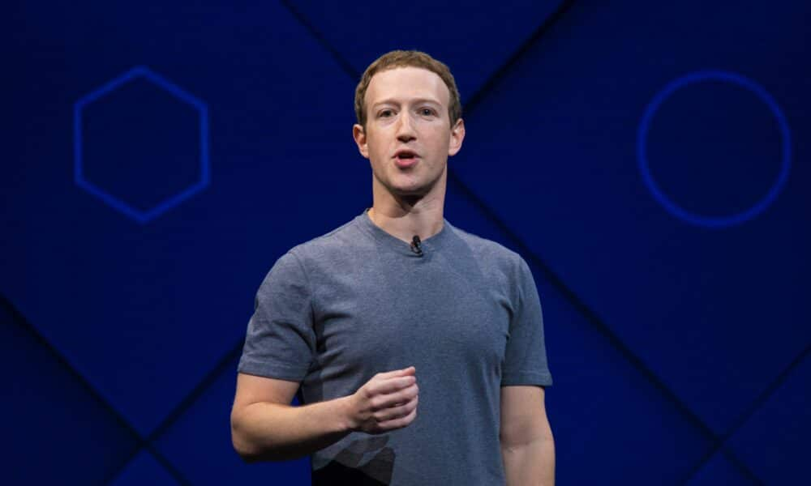
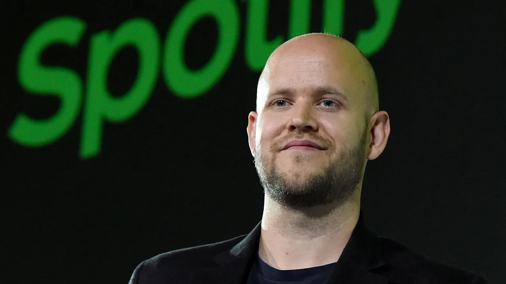

Palestrantes

Elon Musk
Elon Reeve Musk é um empreendedor, empresário e filantropo
sul-africano-canadense, naturalizado estadunidense. Ele é o fundador, diretor executivo
e diretor técnico da SpaceX; CEO da Tesla, Inc.; vice-presidente da OpenAI, fundador e CEO da Neuralink;
proprietário do Twitter.
Apresentará a palestra "HTML para Iniciantes"

Mark Zuckerberg
Mark Elliot Zuckerberg é um magnata, empresário e filantropo
norte-americano, Ele é conhecido por co-fundar o site de mídia social Facebook
e sua empresa-mãe Meta Platforms, da qual ele é presidente, diretor executivo e
acionista controlador.
Instruirá na Oficina "Fazendo seu site pessoal."

Bill Gates
William Henry "Bill" Gates III é um magnata, empresário, diretor
executivo, investidor, filantropo e autor americano, que ficou conhecido por fundar, junto
com Paul Allen a Microsoft, a maior e mais conhecida empresa de software do mundo em termos de valor de mercado
Apresentará a palestra "CSS para Iniciantes"
